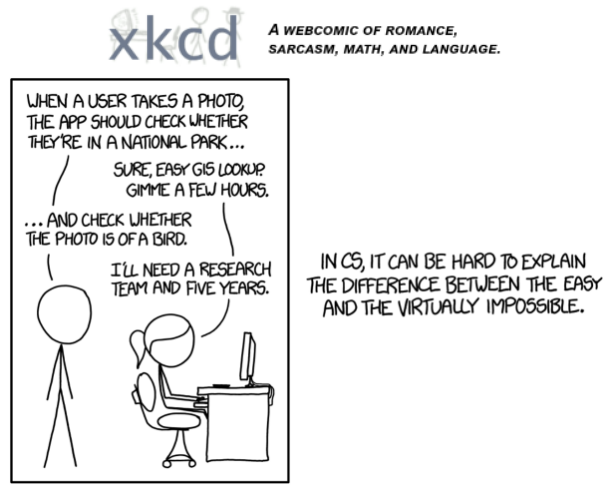
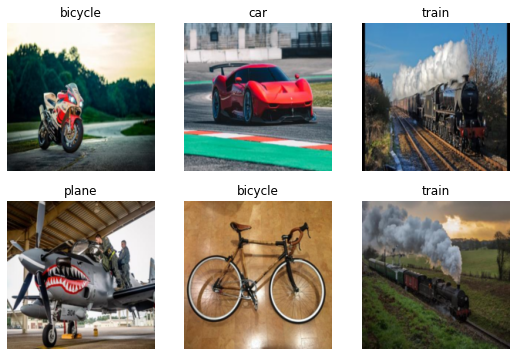
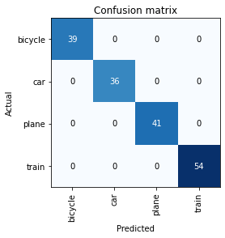

!pip install -Uqq fastai duckduckgo_search
WHAT IS IT REALLY?
In 2015 the idea of creating a computer system that could recognise images was considered so outrageously challenging that it was the basis of this XKCD joke:

In this tutorial we are going to create a computer vision model that can classify whether an image is a car, plane, train or bicycle. However this approach can work for any computer vision problem.
By the end of this tutorial, you will be able to implemenent an image classification model in just a few minutes, using entirely free resources!. We shall be using the fastai library A high framework library built on top of pytorch. Feel free to see the ducumentation here for more understanding.
The basic steps we’ll take are:
- Use DuckDuckGo to search for images of car, plane, train or bicycle photos.
- Fine-tune a pretrained neural network to recognise the groups
- Try running this model on a picture of a plane and see if it works.
Step 1: Download images of plane, train, car and bicycles.
The first thing we are going to do is to install the latest versions of fastai and duckduckgo_search since we shall be using it to search images on the internet.
We create a search_images function that we shall use to iterate on the different terms we shall be searching on the web.
from duckduckgo_search import ddg_images
from fastcore.all import *
def search_images(term, max_images=100):
print(f"Searching for '{term}'")
return L(ddg_images(term, max_results=max_images)).itemgot('image')Let’s start by searching for a plane photo and see what kind of result we get. We’ll start by getting URLs from a search:
#NB: `search_images` depends on duckduckgo.com, which doesn't always return correct responses.
# If you get a JSON error, just try running it again (it may take a couple of tries).
urls = search_images('plane photos', max_images=1)
urls[0]Searching for 'plane photos''http://airplanes.itsabouttravelling.com/wp-content/uploads/2020/02/c-fjzs-air-canada-boeing-777-300er-02-scaled.jpg'…and then download a URL and take a look at it:
from fastdownload import download_url
dest = 'plane.jpg'
download_url(urls[0], dest, show_progress=False)
from fastai.vision.all import *
im = Image.open(dest)
im.to_thumb(256,256)Now let’s do the same with “car photos” and see if it works as well:
download_url(search_images('car photos', max_images=1)[0], 'car.jpg', show_progress=False)
Image.open('car.jpg').to_thumb(256,256)Searching for 'car photos'Our searches seem to be giving reasonable results, so let’s grab a few examples of each of “plane”, “car”, “train” and “bicycle” photos, and save each group of photos to a different folder:
vehicles = 'car','train', 'bicycle', 'plane'
path = Path('vehicles')
for o in vehicles:
dest = (path/o)
dest.mkdir(exist_ok=True, parents=True)
download_images(dest, urls=search_images(f'{o} photo'))
resize_images(path/o, max_size=400, dest=path/o)Searching for 'car photo'
Searching for 'train photo'
Searching for 'bicycle photo'
Searching for 'plane photo'Step 2: Train our model
Some photos might not download correctly which could cause our model training to fail, so we’ll remove them:
failed = verify_images(get_image_files(path))
failed.map(Path.unlink)
len(failed)17To train a model, we’ll need DataLoaders, which is an object that contains a training set (the images used to create a model) and a validation set (the images used to check the accuracy of a model – not used during training). In fastai we can create that easily using a DataBlock, and view sample images from it:
dls = DataBlock(
blocks=(ImageBlock, CategoryBlock),
get_items=get_image_files,
splitter=RandomSplitter(valid_pct=0.2, seed=42),
get_y=parent_label,
item_tfms=[Resize(192, method='squish')]
).dataloaders(path, bs=32)
dls.show_batch(max_n=6)
Here what each of the DataBlock parameters means:
blocks=(ImageBlock, CategoryBlock),The inputs to our model are images, and the outputs are categories (in this case, “plane”, “car”, “train” or “bicycle”).
get_items=get_image_files, To find all the inputs to our model, run the get_image_files function (which returns a list of all image files in a path).
splitter=RandomSplitter(valid_pct=0.2, seed=42),Split the data into training and validation sets randomly, using 20% of the data for the validation set.
get_y=parent_label,The labels (y values) is the name of the parent of each file (i.e. the name of the folder they’re in, which will be pane, car, train, or bicycle).
item_tfms=[Resize(192, method='squish')]Before training, resize each image to 192x192 pixels by “squishing” it (as opposed to cropping it).
Now we’re ready to train our model. The fastest widely used computer vision model is resnet18. You can train this in a few minutes, even on a CPU! (On a GPU, it generally takes under 20 seconds…)
fastai comes with a helpful fine_tune() method which automatically uses best practices for fine tuning a pre-trained model, so we’ll use that.
learn = vision_learner(dls, resnet18, metrics=error_rate)
learn.fine_tune(3)/usr/local/lib/python3.9/dist-packages/torchvision/models/_utils.py:208: UserWarning: The parameter 'pretrained' is deprecated since 0.13 and will be removed in 0.15, please use 'weights' instead.
warnings.warn(
/usr/local/lib/python3.9/dist-packages/torchvision/models/_utils.py:223: UserWarning: Arguments other than a weight enum or `None` for 'weights' are deprecated since 0.13 and will be removed in 0.15. The current behavior is equivalent to passing `weights=ResNet18_Weights.IMAGENET1K_V1`. You can also use `weights=ResNet18_Weights.DEFAULT` to get the most up-to-date weights.
warnings.warn(msg)
Downloading: "https://download.pytorch.org/models/resnet18-f37072fd.pth" to /root/.cache/torch/hub/checkpoints/resnet18-f37072fd.pth| epoch | train_loss | valid_loss | error_rate | time |
|---|---|---|---|---|
| 0 | 0.820234 | 0.014370 | 0.000000 | 00:09 |
| epoch | train_loss | valid_loss | error_rate | time |
|---|---|---|---|---|
| 0 | 0.037691 | 0.001882 | 0.000000 | 00:05 |
| 1 | 0.032922 | 0.003439 | 0.000000 | 00:04 |
| 2 | 0.022986 | 0.003907 | 0.000000 | 00:04 |
Generally when I run this I see 100% accuracy on the validation set (although it might vary a bit from run to run).
“Fine-tuning” a model means that we’re starting with a model someone else has trained using some other dataset (called the pretrained model), and adjusting the weights a little bit so that the model learns to recognise your particular dataset. In this case, the pretrained model was trained to recognise photos in imagenet, and widely-used computer vision dataset with images covering 1000 categories).
And another interesting thing to look at when dealing with categorical target variables is that you can run a confusion matrix which gives you a visual representation and a sense on what classes are hard to predict. For our case, there is no time any class is being predicted wrongly which means that our model is performing very well.
interp = ClassificationInterpretation.from_learner(learn)
interp.plot_confusion_matrix()
Step 3: Use our model
Let’s see what our model thinks about that car we downloaded at the start:
pred,_,probs = learn.predict(PILImage.create('car.jpg'))print(f"This is a: {pred}.")
print(f"Probability it's a car: {probs[1]:.4f}")This is a: car.
Probability it's a car: 1.0000We can then pass export to our learner to save our model as a pickel file. This means that any one now can use our model for making predictions
learn.export('model.pkl')Good job, resnet18. :)
So, as you see, in the space of a few years, creating computer vision classification models has gone from “so hard it’s a joke” to “trivially easy and free”!
It’s not just in computer vision. Thanks to deep learning, computers can now do many things which seemed impossible just a few years ago, including creating amazing artworks, and explaining jokes. It’s moving so fast that even experts in the field have trouble predicting how it’s going to impact society in the coming years.
One thing is clear – it’s important that we all do our best to understand this technology, because otherwise we’ll get left behind!